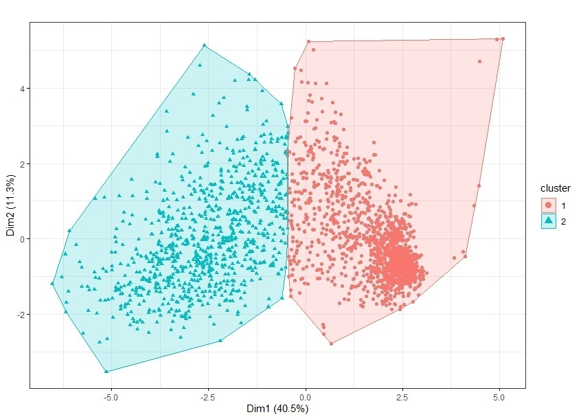
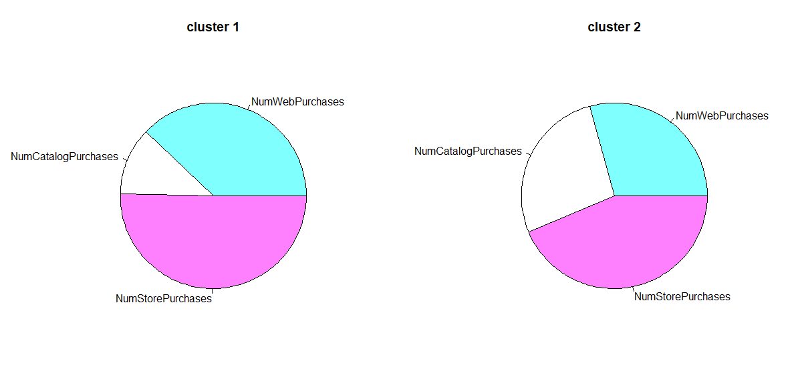

Clustering in R
- Accessed a data set of customer purchasing habits at a winery. Included was demographic data of the customers and their spending habits at this store.
- Cleaned data, removing unnecessary columns and bad entries.
- Scaled dataset based on standardization.
- Selected optimal number of clusters (2) using silhouette scores and elbow plot.
- Utilized K-means clustering to segment, then employed fviz_cluster from the factoextra package to visualize the results.
- Confirmed that the optimal number of clusters had been chosen with a silhouette plot.
- Separated data entries into the two clusters and plotted average and total values for each.
- The two clusters became customer segments for which a marketing plan was made to be recommended to the winery.
- Created charts of purchasing channels and sales of each product category.





Full code can be found in github repository here